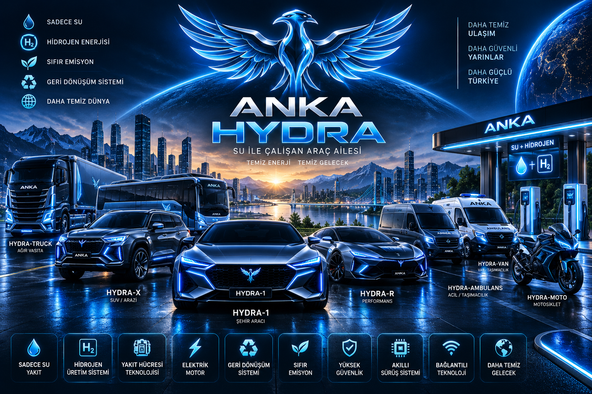
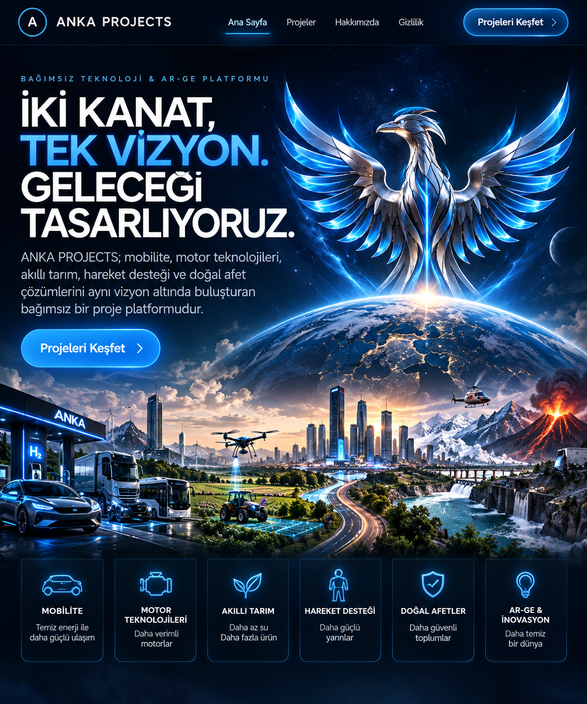
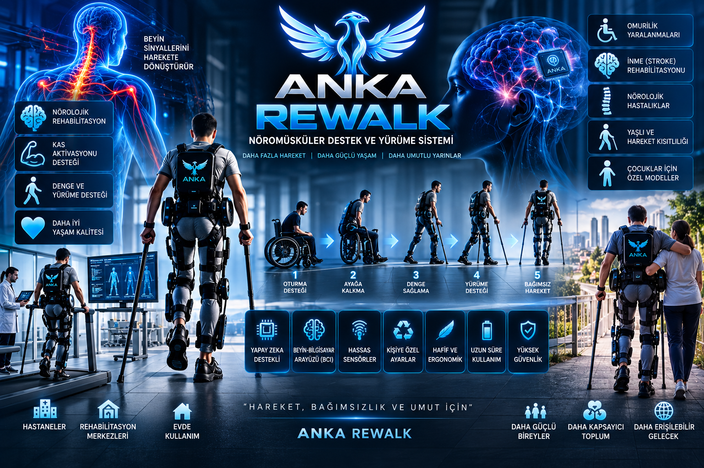
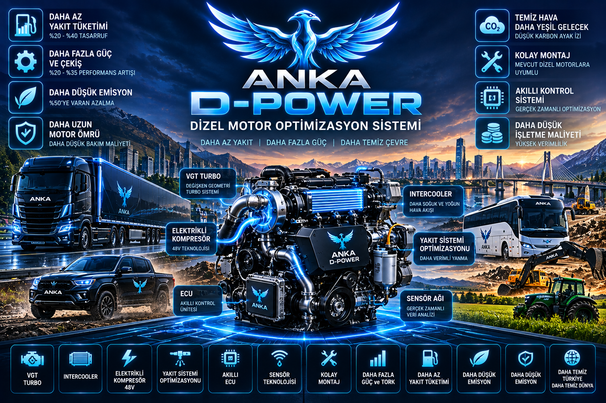
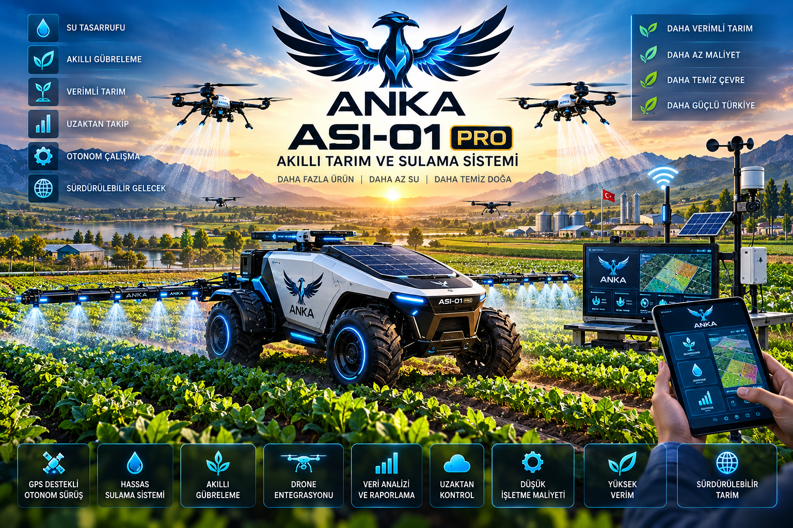
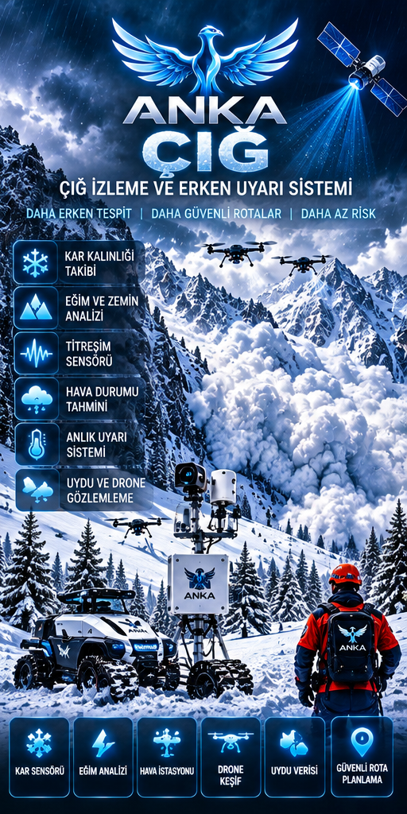
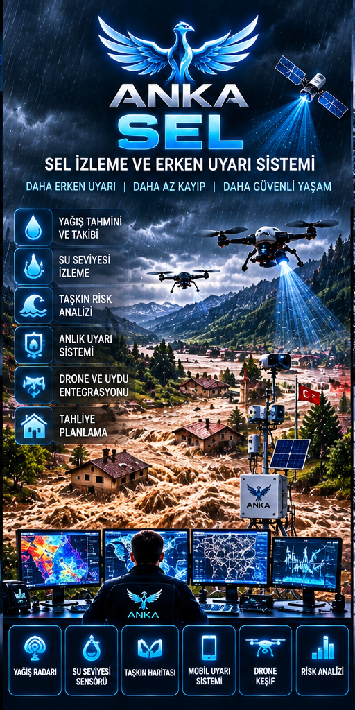
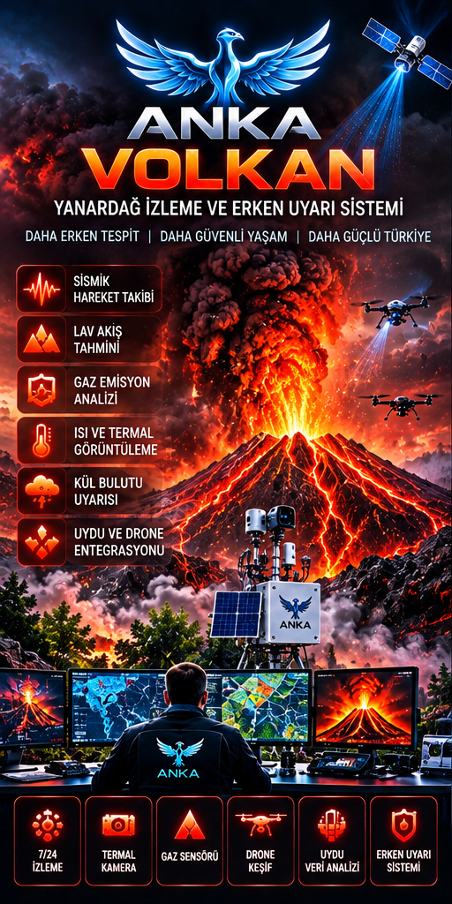

01 · MOBİLİTE
ANKA HYDRA
Yeni nesil temiz enerji ve akıllı araç ailesi. Binek, SUV, performans, ticari, VAN, BUS, ambulans, motosiklet ve diğer mobilite kategorilerine yönelik bir platform konsepti.
ANKA PROJECTS; mobilite, motor teknolojileri, akıllı tarım, hareket desteği ve doğal afet çözümlerini aynı vizyon altında buluşturan bağımsız bir proje platformudur.
Projeleri Keşfet
Siteye giren ziyaretçi, her projenin ne olduğunu ilk bakışta anlayabilsin diye proje adı, alanı, kısa amacı ve ilgili görseli aynı bölümde gösterilir. Hassas teknik ayrıntılar kamuya açık şekilde paylaşılmaz.

Yeni nesil temiz enerji ve akıllı araç ailesi. Binek, SUV, performans, ticari, VAN, BUS, ambulans, motosiklet ve diğer mobilite kategorilerine yönelik bir platform konsepti.

Hareket kısıtlı bireylerin yürüme ve günlük yaşam desteğine yönelik nöromüsküler destek ve giyilebilir teknoloji projesi.

Mevcut dizel motorlarda verimlilik, çekiş, emisyon ve işletme hedefleri üzerine geliştirilen motor optimizasyon projesi.

Akıllı sulama, hedefli gübreleme, uzaktan takip ve kaynak verimliliği odağında geliştirilen akıllı tarım projesi.
Deprem erken uyarı ve afet farkındalığı için sensör, iletişim ve merkezi izleme yaklaşımını bir araya getirmeyi amaçlayan proje.

Çığ riskinin izlenmesi, analiz edilmesi ve erken uyarı mekanizmalarıyla desteklenmesine yönelik konsept.

Yağış, su seviyesi, debi ve çevresel veriler üzerinden taşkın riskinin izlenmesi ve erken uyarı yaklaşımı.

Yanardağ aktivitesinin gözlem, sensör ve veri analiziyle takip edilmesine yönelik erken uyarı konsepti.

ANKA PROJECTS çatısı altındaki proje fikirlerinin teknoloji vizyonu, proje geliştirme yaklaşımı ve tanıtım çalışmalarını yürüten sorumlu.
Vizyon: Fikirleri görünür projelere, projeleri geleceğe yönelik teknoloji çalışmalarına dönüştürmek.
Bu web sitesi projelerin genel tanıtımı amacıyla hazırlanmıştır. Patent başvurularını, fikrî mülkiyet haklarını veya ticari sır niteliğindeki teknik ayrıntıları zedeleyebilecek hassas bilgiler bilinçli olarak paylaşılmaz.
Proje adları, konseptler, görseller ve özgün çalışmalar ilgili hak sahiplerinin fikrî mülkiyetine tabi olabilir.